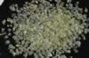

|
|
(For further information on spectroscopy, see:
http://speclab.cr.usgs.gov)
TITLE: Olivine HS285 Fo80 DESCRIPT
DOCUMENTATION_FORMAT: MINERAL
SAMPLE_ID: HS285
MINERAL_TYPE: Nesosilicate
MINERAL: Olivine (Olivine group)
FORMULA: Mg2SiO4-Fe2SiO4 Fo80
FORMULA_HTML: Mg2SiO4-Fe2SiO4 Fo80
COLLECTION_LOCALITY: Arizona
ORIGINAL_DONOR: Hunt and Salisbury Collection
CURRENT_SAMPLE_LOCATION: USGS Denver Spectroscopy Laboratory
ULTIMATE_SAMPLE_LOCATION: USGS Denver Spectroscopy Laboratory
SAMPLE_DESCRIPTION:
A spectrum for this sample was published in: Hunt, G.R., J.W. Salisbury, and C.J. Lenhoff, 1973, Visible and near-infrared spectra of minerals and rocks: VI. Additional silicates. Modern Geology, v. 4, p. 85-106.
With the note that the sample is Peridot, and the following comment: "This is a gem quality olivine which is 80Fo-20Fa. It contains a small amount of spinel as well as displaying a trace of iron oxide stain. The ferric iron band at 0.64µm is prominent in the larger particle size sample."
The sample measured for the library was the largest sieve interval, 4B, 250-1200µm.
For additional information on the spectra of olivine's see: King, T.V.V. and W.I. Ridley, 1987, Relation of the Spectroscopic Reflectance of Olivine to Mineral Chemistry and Some Remote Sensing Implications. J. Geophys. Res., 11,457-11,469.
IMAGE_OF_SAMPLE:

END_SAMPLE_DESCRIPTION.
XRD_ANALYSIS:
40 kV - 30 mA, 7.0-9.5 keV
File: oliv285.mdi (smear on quartz plate)
References: PDF2 #34-0189
Found: Forsterite
Comments: Sharp peaks show good resolution of the alpha1-alpha2 components. Some
peaks have slight shoulders toward larger d-spacings. PDF2 34-0189 (synthetic
forsterite) is an excellent match for HS-285, much better than 31-0795 (ferroan
forsterite). One very weak peak at 2.85 Angstroms has not been identified. The
shoulders could be caused by slight Fe-Mg zoning.
END_XRD_ANALYSIS.
COMPOSITIONAL_ANALYSIS_TYPE: None # XRF, EM(WDS), ICP(Trace), WChem
COMPOSITION_TRACE:
COMPOSITION_DISCUSSION:
END_COMPOSITION_DISCUSSION.
MICROSCOPIC_EXAMINATION:
END_MICROSCOPIC_EXAMINATION.
SPECTROSCOPIC_DISCUSSION:
END_SPECTROSCOPIC_DISCUSSION.
SPECTRAL_PURITY: 1b2b3b4_ # 1= 0.2-3, 2= 1.5-6, 3= 6-25, 4= 20-150 microns
| LIB_SPECTRA_HED: | where | Wave Range | Av_Rs_Pwr | Comment |
|---|---|---|---|---|
| LIB_SPECTRA: | splib04a r 3625 | 0.2-3.0µm | 200 | g.s.= |
| LIB_SPECTRA: | splib05a r 5115 | 0.2-3.0µm | 200 | g.s.= |
| LIB_SPECTRA: | splib06a r 16681 | g.s.= | ||
| LIB_SPECTRA: | splib06a r 16693 | g.s.= |
{kind=link}